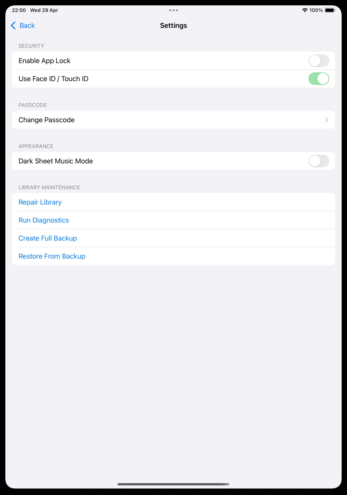
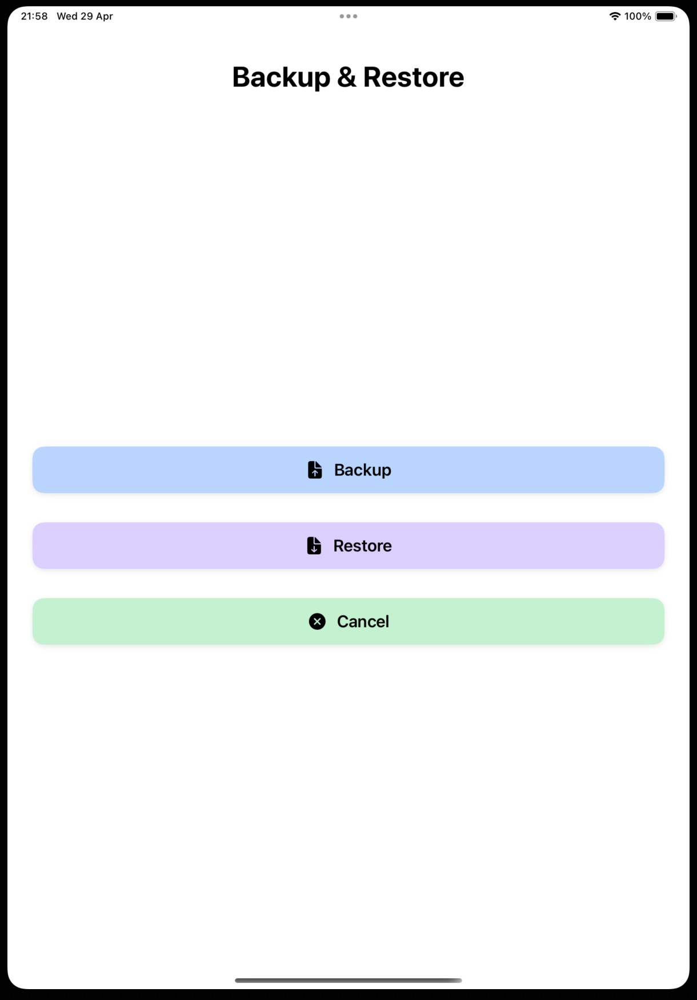
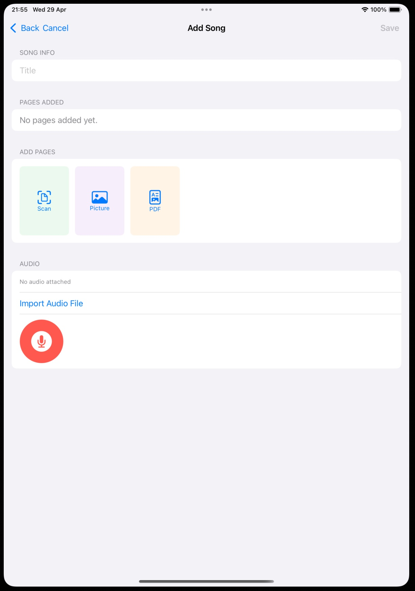
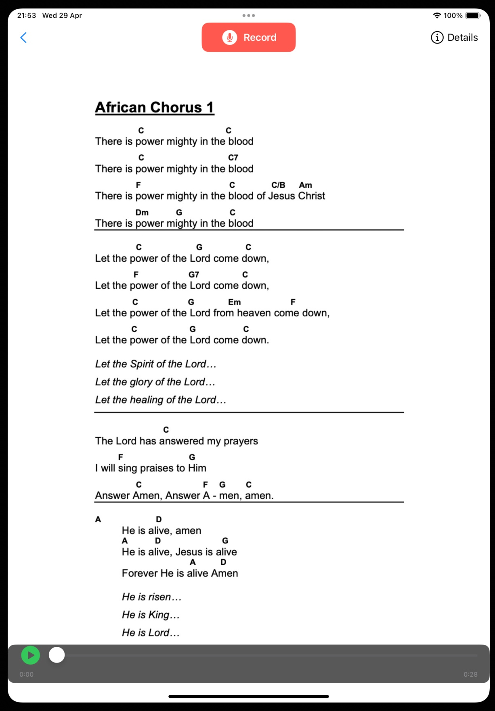
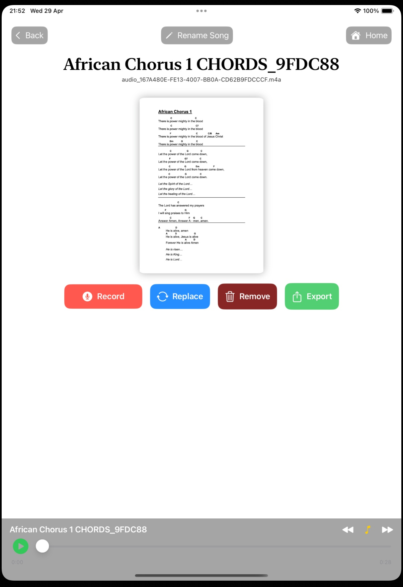
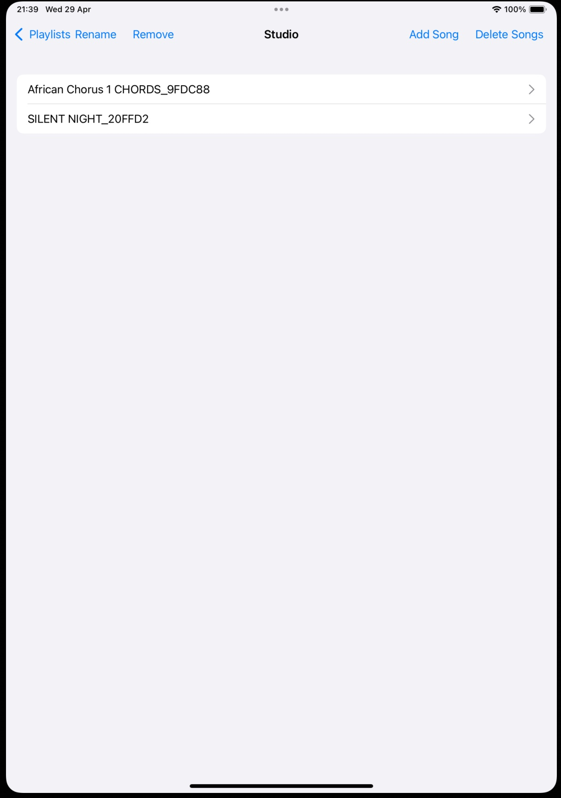
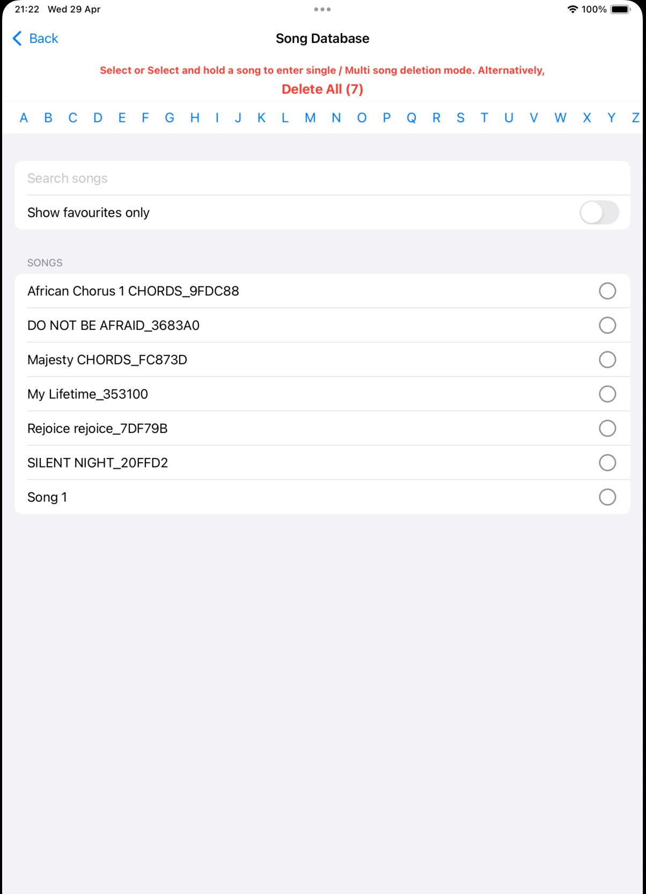

MusDis is a musician’s all‑in‑one workspace — combining sheet music management, audio recording, playlists, and library maintenance in a clean, elegant interface. Each section below illustrates a key part of the app’s workflow using screenshots stored in the image/ folder.

The Settings screen gives users full control over their environment. Under Security, users can enable App Lock and use Face ID / Touch ID for secure access. The Passcode section allows password changes, while Appearance introduces Dark Sheet Music Mode for night performances. Library Maintenance tools — Repair Library, Run Diagnostics, Create Full Backup, and Restore From Backup — ensure the user’s music collection stays healthy and recoverable.

MusDis simplifies data management with a dedicated Backup & Restore interface. Large, clear buttons make it effortless to safeguard or recover your entire library. This design reflects MusDis’s commitment to reliability and peace of mind for musicians who depend on their digital archives.

The Add Song workflow allows users to import sheet music via Scan, Picture, or PDF. Audio integration is seamless: users can import existing files or record directly using the microphone button. This unified workflow makes MusDis ideal for both composers and performers.

The Song Viewer displays formatted sheet music with lyrics and chords. A Record button allows instant audio capture while viewing the music. The playback bar supports review and practice, turning MusDis into a live rehearsal companion.

The Recorder provides a clean interface for capturing audio. Users can record, play back, and save takes directly into their library. This makes MusDis a practical tool for rehearsals, lessons, and quick musical ideas.

The Playlist screen allows users to group songs for performances, rehearsals, or themed sets. Users can add, rename, reorder, and remove songs, making it easy to prepare for gigs or practice sessions.

The Song Database provides a searchable, alphabetized list of all stored songs. Users can filter favourites, select multiple entries, or delete songs individually or in bulk. This structured view ensures quick access to any piece in the collection — essential for large libraries.
The Home screen provides quick access to the core modules: Song Database, Playlists, Add New Song, Recorder, Backup & Restore, and Settings. It is designed for clarity and speed, helping musicians get to what they need instantly.
Together, these screens show MusDis’s complete ecosystem:
MusDis isn’t just an app — it’s a musician’s digital studio, built for clarity, reliability, and creative flow.